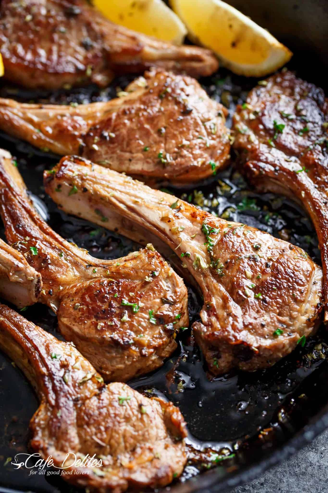

Lamb Chops

Just like a Greek restaurant or even better! Whether you decide to grill them or fry them in a cast iron skillet (or regular pan), these homemade Greek Lamb Chops are a family favourite! Once you try these you will never look back!
Ingredients
- 1/4 cup olive oil
- Juice of 1 lemon (about 1/4 cup lemon juice)
- 2 tsp dried oregano preferably Greek, or 1/2 cup chopped fresh
- 4 cloves garlic minced
- 1 tsp salt
- 1/2 tsp freshly ground black pepper
- 8 lamb chops
- 1 tbsp olive oil for cooking
Steps
- Using paper towels, pat dry chops and discard any shards or bone fragments.
- Mix all of the ingredients together in a small jug or bowl.
- Arrange lamb chops in a large baking dish or on a large plate, and pour the marinade all over the lamb, rubbing it into the meat. Cover with plastic wrap and marinate for half an hour, or for a deeper flavour, marinate overnight in the refrigerator, turning the chops from time to time (before cooking, let lamb chops sit at room temp 30 minutes).
- Heat oil in a pan (cast iron preferably or grill plates) over high heat until just starting to smoke. Fry or grill lamb in 2 batches for 3-4 minutes each side, depending on thickness until done to your liking. (Usually, at 3 minutes per side they are medium, and at 4 minutes they are medium-well.)
- Let rest for 5 minutes before serving.
- Sprinkle with a little extra dried oregano for added flavour and a little extra lemon juice (optional).